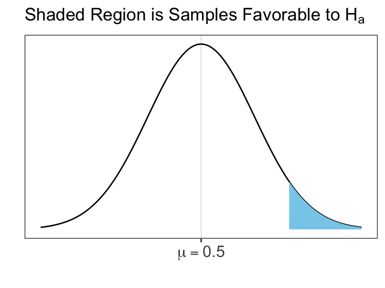
Practice Problems Notebook
In this notebook, we’ll work through several practice problems from our Textbook and MyOpenMath.
Introduction to Inference (MoM Week 5 HW)
Problem 1 Solved
Problem 1: For each of the following situations, state whether the parameter of interest is a mean or a proportion. It may be helpful to examine whether individual responses are numerical or categorical.
- In a survey, one hundred college students are asked how many hours per week they spend on the Internet.
- Participants are being asked: “How many hours per week do you spend on the internet?”
- Sample Answer: 5 hours, 6 and a half hours…numerical values.
- So this study is investigating a population mean (the average number of hours per week on the internet).
- In a survey, one hundred college students are asked: “What percentage of the time you spend on the Internet is part of your course work?”
- Participants are asked: “What percentage of the time you spend on the Internet is part of your course work?”
- Sample Answer: 75%, 43%
- Investigating average percentage of time spent.
- In a survey, one hundred college students are asked whether or not they cited information from Wikipedia in their papers.
- Participants asked: “Have you cited Wikipedia on a paper?”
- Sample answer: Yes, No
- This is a study on proportions
- In a survey, one hundred college students are asked what percentage of their total weekly spending is on alcoholic beverages.
- Participants asked: “What percentage of your weekly spending is on alcohol?”
- Sample Answer: 12%, 5%, numeric percentages
- This is a study on means (the average percentage of total weekly spending)
- In a sample of one hundred recent college graduates, it is found that 85 percent expect to get a job within one year of their graduation date.
- Participants asked: “Do you expect to find a job within one year of graduating?”
- Sample Answer: yes/no
- This is a study on proportions (the proportion of recent college graduates who expect to find a job within one year of graduating).
Problem 2 Solved
Problem 2: A poll conducted in 2013 found that 52% of U.S. adult Twitter users get at least some news on Twitter, and the standard error for this estimate was 2.4%. Conduct a hypothesis test at the \(\alpha = 0.05\) level of significance to determine whether a majority of US adult Twitter users get at least some news on Twitter.
Solution.
- Hypotheses: \(\begin{array}{ll} H_0: & \mu = 0.5\\ H_a: & \mu > 0.5\end{array}\)
- Picture of Alternative Hypothesis:
- Set \(\alpha\) Level: Notice that \(\alpha = 0.05\) in the problem statement.
- Compute the Test Statistic:
#Here is a code cell
null_value <- 0.5
point_estimate <- 0.52
st_error <- 0.024
test_stat <- (point_estimate - null_value)/st_error
test_stat[1] 0.8333333
- Compute the \(p\)-value: Notice that our \(p\)-value is the area to the right of our test statistic. We use the picture of the alternative hypothesis to tell this.
p_val <- 1 - pnorm(test_stat, 0, 1)
p_val[1] 0.2023284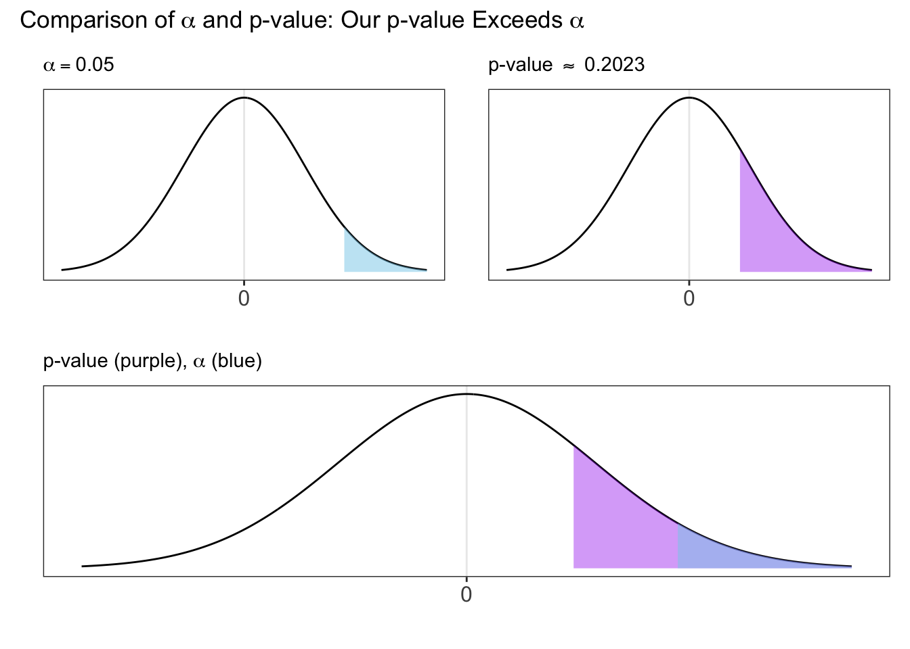
- Compare the \(p\)-value to the Level of Significance: Since our \(p\)-value exceeds the level of significance, our sample is not one of those “unlikely” samples which are favorable to the alternative hypothesis. That is, our sample is compatible with a world in which the null hypothesis is true – we do not have significant evidence to suggest that more than 50% of US Adult Twitter users get some news from Twitter. \(_\blacktriangledown\)
Problem 5 Unsolved
Problem 5: A store randomly samples 603 shoppers over the course of a year and finds that 142 of them made their visit because of a coupon they’d received in the mail. Construct a 95% confidence interval for the fraction of all shoppers during the year whose visit was because of a coupon they’d received in the mail.
Problem 6 Unsolved
Problem 6: A tutoring company would like to understand if most students tend to improve their grades (or not) after they use their services. They sample 200 of the students who used their service in the past year and ask them if their grades have improved or declined from the previous year. Of the 200 sampled, 185 said that their grades had improved. Determine whether the data provides evidence to suggest that the companies tutoring services suggest that over 90% of customers report improved grades after using the tutoring services. Use the \(\alpha = 0.1\) level of significance.
Problem 11 Unsolved
Problem 11: A poll conducted in 2013 found that 52% of U.S. adult Twitter users get at least some news on Twitter (Pew, 2013). The standard error for this estimate was 2.4%, and a normal distribution may be used to model the sample proportion. Construct a 99% confidence interval for the fraction of U.S. adult Twitter users who get some news on Twitter, and interpret the confidence interval in context.
Inference on One and Two Proportions (MoM Week 6 HW)
Problem 1 Unsolved
Problem 1: About 77% of young adults think they can achieve the American dream. Determine if the following statements are true or false, and explain your reasoning.
The distribution of sample proportions of young Americans who think they can achieve the American dream in samples of size 20 is left skewed.
The distribution of sample proportions of young Americans who think they can achieve the American dream in random samples of size 40 is approximately normal since \(n \geq 30\).
A random sample of 60 young Americans where 85% think they can achieve the American dream would be considered unusual.
A random sample of 120 young Americans where 85% think they can achieve the American dream would be considered unusual.
Problem 3 Solved
Problem 3: Among a simple random sample of 331 American adults who do not have a four-year college degree and are not currently enrolled in school, 48% said they decided not to go to college because they could not afford school. Calculate a 90% confidence interval for the proportion of Americans who decide to not go to college because they cannot afford it, and interpret the interval in context.
Solution. In this problem, we are asked to construct a confidence interval, with 90% confidence. We’ll follow the steps to do so below.
We are trying to capture a single population proportion here. The formula for a confidence interval is \(\left(\text{point estimate}\right) \pm \left(\text{critical value}\right)\left(S_E\right)\).
- Point Estimate: The point estimate is the sample proportion. Here, that is 48%.
- Standard Error (\(S_E\)): Using the standard error decision tree, we find that \(\displaystyle{S_E = \sqrt{\frac{p\left(1 - p\right)}{n}}}\). Notice also that there is no information about degrees of freedom (\(df\)) in this box, so we are free to use the normal distribution with this problem.
- Critical Value: Since we are working with a normal distribution, we can use the small table at the top of the standard error decision tree to determine that the critical value is \(z_{\alpha/2} = 1.65\).
Since we have all of the components of the confidence interval fomula, we are now ready to construct our interval.
point_estimate <- 0.48
st_error <- sqrt(0.48*(1 - 0.48)/331)
critical_value <- 1.65
lower <- point_estimate - (critical_value*st_error)
upper <- point_estimate + (critical_value*st_error)
c(lower, upper)[1] 0.4346902 0.5253098Interpretation: Given the results above, we are 90% confident that, of American Adults who chose not to go to college, the proportion making that decision because they could not afford to is between 43.47% and 52.53%. Note that we cannot claim that a majority or minority of American Adults made this decision for this reason since our confidence interval contains proportions both below and above 50%. \(_\blacktriangledown\)
Problem 4 Unsolved
Problem 4: A 2010 Pew Research foundation poll indicates that among 1,099 college graduates, 33% watch The Daily Show. Meanwhile, 22% of the 1,110 people with a high school degree but no college degree in the poll watch The Daily Show. Construct a 95% confidence interval for \(\left(p_{\text{college grad}} - p_{\text{HS or less}}\right)\), where p is the proportion of those who watch The Daily Show
Problem 5 Solved
Problem 5: Researchers studying the link between prenatal vitamin use and autism surveyed the mothers of a random sample of children aged 24 - 60 months with autism and conducted another separate random sample for children with typical development. The table below shows the number of mothers in each group who did and did not use prenatal vitamins during the three months before pregnancy (periconceptional period). Conduct a hypotheses to test for independence of use of prenatal vitamins during the three months before pregnancy and autism. (Schmidt, 2011)
| \(\hspace{1cm}\) | Autism | Typical Development | Total |
|---|---|---|---|
| No vitamin | 111 | 70 | 181 |
| Vitamin | 143 | 159 | 302 |
| Total | 254 | 229 | 483 |
Solution. Note that we are conducting a hypothesis test here for a difference of two population proportions. The first population is mothers and children where the mother took a prenatal vitamin during pregnancy, and the second population is mothers and children who did not take a prenatal vitamin during pregnancy.
- Hypotheses: The hypotheses are \(\begin{array}{ll} H_0: & p_{\text{vitamin}} = p_{\text{no vitamin}}\\ H_a: & p_{\text{vitamin}} \neq p_{\text{no vitamin}}\end{array}\). While this framing of the hypotheses is fine, it hides (i) the null value and (ii) the population parameter from us. It is generally better to rewrite these hypotheses so that we have “zero on one side”. That is, the hypotheses are \(\begin{array}{ll} H_0: & p_{\text{vitamin}} - p_{\text{no vitamin}} = 0\\ H_a: & p_{\text{vitamin}} - p_{\text{no vitamin}} \neq 0\end{array}\)
- Picture of Alternative Hypothesis:
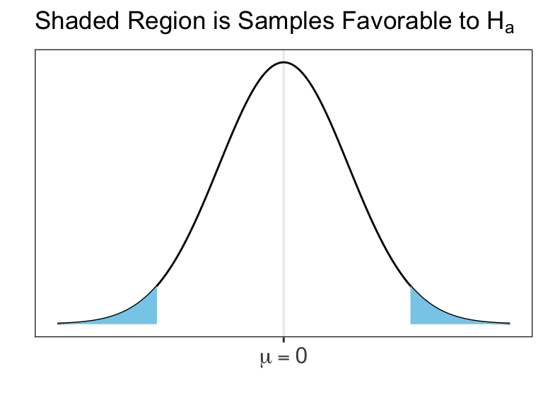
- Set \(\alpha\) Level: Notice that we’ll assume \(\alpha = 0.05\) since we aren’t told otherwise. Note that this \(\alpha\) is split up across the two tails, so each shaded area in the image above represents 2.5% of samples.
- Compute the Test Statistic:
null_value <- 0
p_vitamin <- 143/302
p_no_vitamin <- 111/181
point_estimate <- p_vitamin - p_no_vitamin
#Compute Standard Error
term1 <- p_vitamin*(1 - p_vitamin)/302
term2 <- p_no_vitamin*(1 - p_no_vitamin)/181
st_error <- sqrt(term1 + term2)
test_stat <- (point_estimate - null_value)/st_error
test_stat[1] -3.023898
- Compute the \(p\)-value: Notice that our \(p\)-value needs to account for samples whose difference in proportions is less than 0 and also samples whose difference in proportions is greater than 0. Our \(p\)-value will need to include two areas, according to our picture of the alternative hypotheses! Because of this, we’ll calculate the area in one tail of the distribution and then double it.
tail_area <- pnorm(test_stat, 0, 1)
p_val <- 2*tail_area
p_val[1] 0.002495405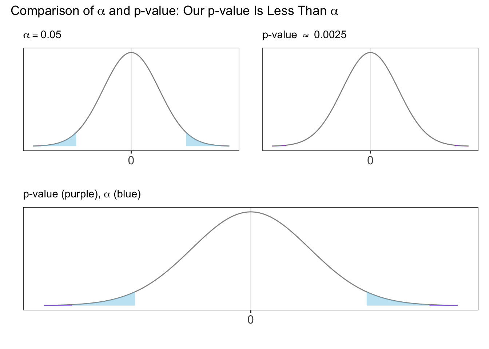
- Compare the \(p\)-value to the Level of Significance: Since our \(p\)-value is less than the level of significance, our sample is one of those “unlikely” samples which are favorable to the alternative hypothesis. That is, our sample is incompatible with a world in which the null hypothesis is true – we do have significant evidence to suggest that there is an association between prenatal vitamin use and the development of autism in children. \(_\blacktriangledown\)
Note. We have not tested whether the use of the particular prenatal vitamin increases or decreases the risk of development with autism here.
Chi-Square Goodness of Fit and Independence (Multiple Proportions)
Problem 1 Solved
Problem 1 (Open Source Textbook): A professor using an open source introductory statistics book predicts that 20% of the students will purchase a hard copy of the book, 5% will print it out from the web, and 75% will read it online. At the end of the semester he asks his students to complete a survey where they indicate what format of the book they used. Of the 126 students, 19 said they bought a hard copy of the book, 9 said they printed it out from the web, and 98 said they read it online. Conduct a test to determine whether the professor’s predictions were inaccurate.
Solution. Note that we are conducting a hypothesis test here to determine whether the sample data provide evidence against the instructor’s predicted distribution. We are working with proportions here, since the question being asked of the students is “how did you access the textbook?”. This is a grouping question. Additionally, we have more than two groups here for which we are comparing proportions. According to the Standard Error Decision Tree, this puts us into the \(\chi^2\) box.
This box tells us that we’ll be using the \(\chi^2\) distribution and test statistic, rather than the normal distribution and typical test statistic formula. From the
Topic 14notebook, you’ll remember that the \(\chi^2\) test statistic is computed as \(\displaystyle{\chi^2_{\text{test stat}} = \sum_{\text{Groups}}{\frac{\left(\text{observed} - \text{expected}\right)^2}{\text{expected}}}}\). Let’s see how this all plays out below.
- Hypotheses: The hypotheses are \(\begin{array}{ll} H_0: & \text{The instructor's assumed distribution is correct}\\ H_a: & \text{The distribution is different}\end{array}\)
- Picture of Alternative Hypothesis:
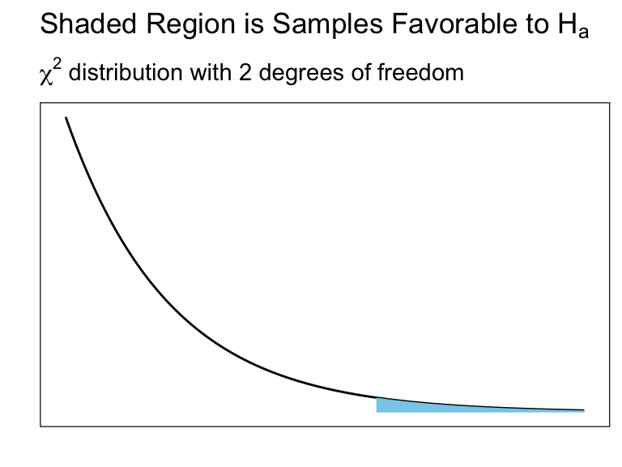
- Set \(\alpha\) Level: Notice that we’ll assume \(\alpha = 0.05\) since we aren’t told otherwise. With the \(\chi^2\) distribution, our \(p\)-values will always be in the upper tail (the right side of the distribution).
- Compute the Test Statistic: In order to compute the test statistic, we’ll need to compare our observed (sample) counts to our expected counts (assuming the distribution from the null hypothesis). We’ll first compute the expected counts in each category below.
| Purchased | Printed | Read Online | |
|---|---|---|---|
| Observed | 19 | 9 | 98 |
| Expected | \(126\left(0.20\right) = 25.2\) | \(126\left(0.05\right) = 6.3\) | \(126\left(0.75\right) = 94.5\) |
From here, we’re ready to compute the \(\chi^2\) test statistic.
observed <- c(19, 9, 98)
expected <- c(25.2, 6.3, 94.5)
test_stat <- sum((observed - expected)^2/expected)
test_stat[1] 2.812169
- Compute the \(p\)-value: We’ll now convert our test statistic (a boundary value) into a \(p\)-value. Notice from our picture of the alternative hypothesis that our \(p\)-value will be the area to the right of the test statistic. Additionally, remember that we’re working with the \(\chi^2\) distribution and not the normal distribution here – we’ll use
pchisq()rather thanpnorm(). The \(\chi^2\) distribution is determined by a number of degrees of freedom, not a mean or standard deviation – for this particular type of test (goodness of fit) – the degrees of freedom is one less than the number of groups.
p_val <- 1 - pchisq(test_stat, df = 3 - 1)
p_val[1] 0.2451011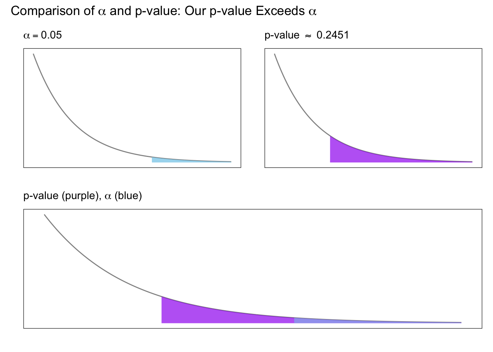
- Compare the \(p\)-value to the Level of Significance: The \(p\)-value for our test is around 0.2451. This means that, if the null hypothesis is true, the probability of observing a sample at least as favorable to the alternative hypothesis as ours is around 24.51%. This is relatively likely!
Our \(p\) value exceeds the level of significance, so our sample is not one of those “unlikely” samples which are favorable to the alternative hypothesis. That is, our sample is compatible with a world in which the null hypothesis is true – we do not have significant evidence to suggest that the instructors expected distribution was incorrect. \(_\blacktriangledown\)
Problem 2 Solved
Problem 2 (Barking Deer): Microhabitat factors associated with forage and bed sites of barking deer in Hainan Island, China were examined. In this region woods make up 4.8% of the land, cultivated grass plot makes up 14.7%, and deciduous forests make up 39.6%. Of the 426 sites where the deer forage, 4 were categorized as woods, 16 as cultivated grassplot, and 61 as deciduous forests. The table below summarizes these data.
| Woods | Cultivated Grassplot | Deciduous Forests | Other | Total |
|---|---|---|---|---|
| 4 | 16 | 61 | 345 | 426 |
Conduct a test to determine whether barking deer prefer to forage in certain habitats over others.
Solution. We’re asked to test a hypothesis here. We’ll test whether the barking deer have no habitat preference (that is, they distributed randomly amongst the four habitat categories). Under the null hypothesis, we’ll assume that the deer have no environmental preference, and so they are observed proportionally to each group. That is, 4.8% of deer are observed in woods, 14.7% of deer are observed in cultivated grasslands, 39.6% of deer are observed in deciduous forests, and 40.1% of deer are observed in other environments.
Notice that we are conducting a hypothesis test here, since we are asked to “conduct a test”. We’re working with a proportion since the participants are deer, and each one is asked a grouping question (“where do you like to forage/bed?”). For these reasons, we are working with a \(\chi^2\) test – in particular, we are working through a \(\chi\)-squared test for goodness of fit.
The test statistic for a \(\chi^2\) test is computed as \(\displaystyle{\chi^2 = \sum_{\text{groups}}{\frac{\left(\text{obsrrved} - \text{expected}\right)^2}{\text{expected}}}}\)
If we assumed that deer had no habitat preference, then we should observe them proportional to each of the coverages. That is, we would have expected to observe \(426\cdot\left(0.048\right)\approx 20.448\) deer in woods, \(426\cdot\left(0.147\right) = 62.622\) deer on cultivated grasslands, \(426\left(0.396\right) = 168.696\) deer in deciduous forest, and \(426\left(0.409\right) = 174.234\) deer in other habitats.
- Hypotheses: The hypotheses are \(\begin{array}{ll} H_0: & \text{The deer have no habitat preference.}\\ H_a: & \text{The deer do have a habitat preference.}\end{array}\)
- Picture of Alternative Hypothesis:
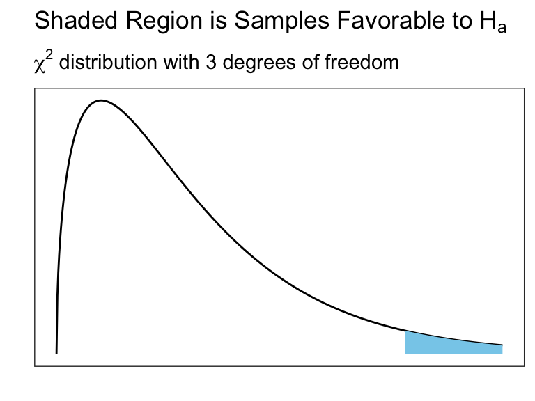
- Set \(\alpha\) Level: Notice that we’ll assume \(\alpha = 0.05\) since we aren’t told otherwise. With the \(\chi^2\) distribution, our \(p\)-values will always be in the upper tail (the right side of the distribution).
- Compute the Test Statistic: In order to compute the test statistic, we’ll need to compare our observed (sample) counts to our expected counts (assuming the distribution from the null hypothesis). From our earlier discussion, we have the following observed and expected counts.
| Woods | Cultivated Grassplot | Deciduous Forests | Other | Total | |
|---|---|---|---|---|---|
| Observed | 4 | 16 | 61 | 345 | 426 |
| Expected | 20.488 | 62.622 | 168.696 | 174.234 | \(\approx\) 426 |
From here, we’re ready to compute the \(\chi^2\) test statistic.
observed <- c(4, 16, 61, 345)
expected <- c(20.488, 62.622, 168.696, 174.234)
test_stat <- sum((observed - expected)^2/expected)
test_stat[1] 284.0994
- Compute the \(p\)-value: We’ll now convert our test statistic (a boundary value) into a \(p\)-value. Notice from our picture of the alternative hypothesis that our \(p\)-value will be the area to the right of the test statistic. Additionally, remember that we’re working with the \(\chi^2\) distribution and not the normal distribution here – we’ll use
pchisq()rather thanpnorm(). The \(\chi^2\) distribution is determined by a number of degrees of freedom, not a mean or standard deviation – for this particular type of test (goodness of fit) – the degrees of freedom is one less than the number of groups. We have four groups here, so three degrees of freedom.
p_val <- 1 - pchisq(test_stat, df = 4 - 1)
p_val[1] 0Scale for x is already present.
Adding another scale for x, which will replace the existing scale.Warning: Removed 4583 rows containing missing values or values outside the scale range
(`geom_line()`).Warning: Removed 94 rows containing missing values or values outside the scale range
(`geom_ribbon()`).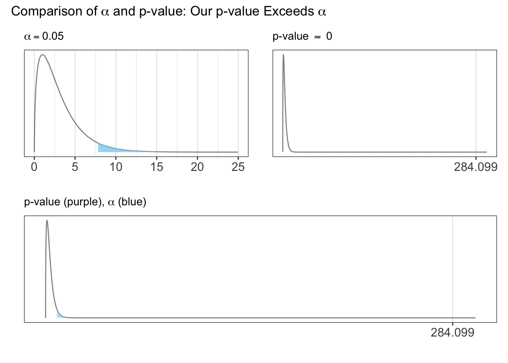
- Compare the \(p\)-value to the Level of Significance: The \(p\)-value for our test is extremely small – it is being rounded to \(0\). This means that, if the null hypothesis is true, the probability of observing a sample at least as favorable to the alternative hypothesis as ours is not likely at all!
Our \(p\) value falls below level of significance, so our sample is one of those “unlikely” samples which are favorable to the alternative hypothesis. That is, our sample is incompatible with a world in which the null hypothesis is true – we do have significant evidence to suggest that the barking deer have habitat preferences. \(_\blacktriangledown\)
Problem 3 Unsolved
Problem 3 (Full-Body Scan): The table below summarizes a data set we first encountered in Exercise 6.26 regarding views on full-body scans and political affiliation. The differences in each political group may be due to chance. Conduct a test to determine whether an individual’s party affiliation and their support of full-body scans are independent of one another. It may be useful to first add on an extra column for row totals before proceeding with the computations.
| Republican | Democrat | Independent | |
|---|---|---|---|
| Should | 264 | 299 | 351 |
| Should Not | 38 | 55 | 77 |
| Don’t Know / No Answer | 16 | 15 | 22 |
| Total | 318 | 369 | 450 |
Problem 4 Solved
Problem 4 (Offshore Drilling): The table below summarizes a data set we first encountered in Exercise 6.23 that examines the responses of a random sample of college graduates and non-graduates on the topic of oil drilling. Complete a chi-square test for these data to check whether there is a statistically significant difference in responses from college graduates and non-graduates.
| College Grad | Not College Grad | |
|---|---|---|
| Support Offshore Drilling | 154 | 132 |
| Oppose Offshore Drilling | 180 | 126 |
| Do not know | 104 | 131 |
| Total | 438 | 389 |
Solution. Note that we are conducting a hypothesis test here to determine whether education level (college grad or not) and stance on offshore oil drilling (support, oppose, or unsure) are independent. Again, we are working with proportions here, since the questions being asked of the participants are “do you have a college degree?” and “are you in favor of offshore oil drilling?”. These are grouping questions. Additionally, we have more than two groups here for which we are comparing proportions (we’ll have six – for each of the two levels of education, there are three stances on drilling). According to the Standard Error Decision Tree, this puts us into the \(\chi^2\) box.
As with the other problems in this section, this box tells us that we’ll be using the \(\chi^2\) distribution and test statistic, rather than the normal distribution and typical test statistic formula. From the
Topic 14notebook, you’ll remember that the \(\chi^2\) test statistic is computed as \(\displaystyle{\chi^2_{\text{test stat}} = \sum_{\text{Groups}}{\frac{\left(\text{observed} - \text{expected}\right)^2}{\text{expected}}}}\). Let’s see how this all plays out below.
- Hypotheses: The hypotheses are \[\begin{array}{ll} H_0: & \text{Education level and stance on offshore oil drilling are independent}\\ H_a: & \text{Education level and stance on offshore oil drilling are dependent (associated)}\end{array}\]
- Picture of Alternative Hypothesis:

- Set \(\alpha\) Level: Notice that we’ll assume \(\alpha = 0.05\) since we aren’t told otherwise. With the \(\chi^2\) distribution, our \(p\)-values will always be in the upper tail (the right side of the distribution).
- Compute the Test Statistic: In order to compute the test statistic, we’ll need to compare our observed (sample) counts to our expected counts (assuming that education and stance on drilling are independent).
In order to proceed, we’ll need to estimate the probabilities associated with each of the categories (college grad, non-grad, support drilling, oppose drilling, and unsure). Notice that there are \(438 + 389 = 827\) total participants in this study. From here, we can see the following:
- \(438/827 \approx 0.5296\) are college grads.
- \(389/827 \approx 0.4704\) are not college grads.
- \(\left(154 + 132\right)/827 \approx 0.3458\) support drilling.
- \(\left(180 + 126\right)/827 \approx 0.37\) oppose drilling.
- \(\left(104 + 131\right)/827 \approx 0.2842\) are unsure of their support.
Now that we have those estimated group membership probabilities, we’ll compute our expected counts by assuming that education level and stance on drilling are independent. Recall that if two events \(A\) and \(B\) are independent, then \(\mathbb{P}\left[A \text{ and } B\right] = \mathbb{P}\left[A\right]\cdot\mathbb{P}\left[B\right]\).
| College Grad | Not College Grad | |
|---|---|---|
| Support Offshore Drilling | \(827\left(0.5296\right)\left(0.3458\right) \approx 151.45\) | \(827\left(0.4704\right)\left(0.3458\right) \approx 134.52\) |
| Oppose Offshore Drilling | \(827\left(0.5296\right)\left(0.37\right) \approx 162.05\) | \(827\left(0.4704\right)\left(0.37\right) \approx 143.94\) |
| Do not know | \(827\left(0.5296\right)\left(0.2842\right) \approx 124.47\) | \(827\left(0.4704\right)\left(0.2842\right) \approx 110.56\) |
From here, we’re ready to compute the \(\chi^2\) test statistic. We’ll use the original observed data from the table at the beginning of the problem statement, and we’ll use the expected values that we just computed.
observed <- c(154, 132, 180, 126, 104, 131)
expected <- c(151.45, 134.52, 162.05, 143.94, 124.47, 110.56)
test_stat <- sum((observed - expected)^2/expected)
test_stat[1] 11.45972
- Compute the \(p\)-value: We’ll now convert our test statistic (a boundary value) into a \(p\)-value. Notice from our picture of the alternative hypothesis that our \(p\)-value will be the area to the right of the test statistic. Additionally, remember that we’re working with the \(\chi^2\) distribution and not the normal distribution here – we’ll use
pchisq()rather thanpnorm(). The \(\chi^2\) distribution is determined by a number of degrees of freedom, not a mean or standard deviation – for this particular type of test (test for independence) – the degrees of freedom is \(df = \left(k - 1\right)\left(\ell - 1\right)\), where \(k\) is the number of levels of the first categorical variable (education level) and \(\ell\) is the number of levels of the second categorical variable (stance on drilling). Here, we’ll use a \(\chi^2\) distribution with \(\left(2 - 1\right)\left(3 - 1\right) = 2\) degrees of freedom.
p_val <- 1 - pchisq(test_stat, df = (2 - 1)*(3 - 1))
p_val[1] 0.003247537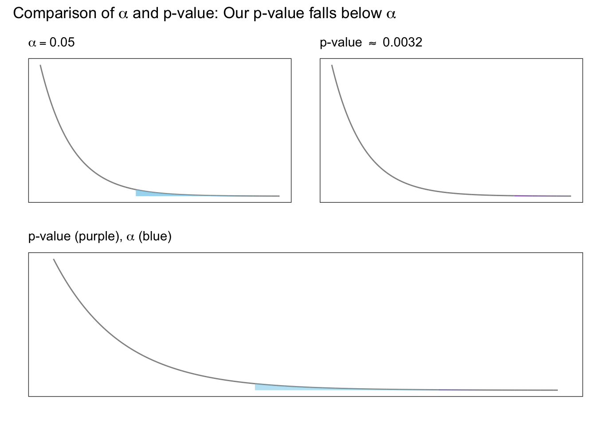
- Compare the \(p\)-value to the Level of Significance: The \(p\)-value for our test is around 0.0032. This means that, if the null hypothesis is true, the probability of observing a sample at least as favorable to the alternative hypothesis as ours is around 0.32%. This is quite unlikely!
Our \(p\) value falls below the level of significance, so our sample is one of those “unlikely” samples which are favorable to the alternative hypothesis. That is, our sample is incompatible with a world in which the null hypothesis is true – we do have significant evidence to suggest that the education level and stance on drilling are dependent (associated). \(_\blacktriangledown\)
Inference on One and Two Means
Problem 1 Solved
Problem 1 (Sleep Habits of New Yorkers): New York is known as “the city that never sleeps”. A random sample of 25 New Yorkers were asked how much sleep they get per night. Statistical summaries of these data are shown below. The point estimate suggests New Yorkers sleep less than 8 hours a night on average. Is the result statistically significant?
| \(n\) | \(\bar{x}\) | \(s\) | \(\text{min}\) | \(\text{max}\) |
|---|---|---|---|---|
| 25 | 7.73 | 0.77 | 6.17 | 9.78 |
Solution. We’re being asked to conduct a hypothesis test here. Let’s let \(\mu\) denote the population mean hours of sleep per night for New Yorkers. This test is to determine whether \(\mu\) is less than 8 hours.
Hypotheses: The hypotheses for this test are \(\left\{\begin{array}{lr} H_0: & \mu = 8\\ H_A: & \mu < 8\end{array}\right.\)
Picture of Alternative Hypothesis: Now that we’ve got our hypotheses written out, lets draw a picture of our alternative hypothesis. As a reminder, what we are really drawing is a representation of the samples which would lead us to prefer the alternative hypothesis (\(H_a\)) as a description of reality over the null hypothesis (\(H_0\)).
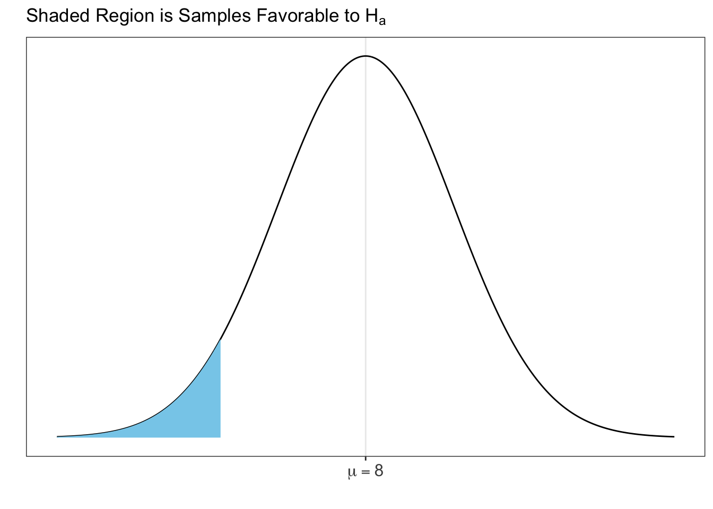
Set \(\alpha\) Level: As a reminder, since no level of significance is explicitly requested in the problem statement, we’ll use \(\alpha = 0.05\). This means that, in the image above, the blue shaded area represents a total of 5% of observed samples under the null hypothesis. These are the samples which are “unlikely” enough, under the null hypothesis, that we would reject that null hypothesis and accept the alternative hypothesis instead.
Compute the Test Statistic: Our job now, is to determine whether our sample is one of those unlikely samples – we’ll do this by identifying a test statistic which represents our sample, and then by computing a corresponding \(p\)-value. As a reminder, our test statistic takes the form: \[\text{test statistic} = \frac{\left(\text{point estimate}\right) - \left(\text{null value}\right)}{\text{standard error}}\]
We can identify our \(\text{null value}\) from the null hypothesis (\(H_0\)).
- In looking at that hypothesis, we see that our null value is \(8\).
Our point estimate is the sample mean average hours slept per night, \(\bar{x} = 7.73\)
To identify our standard error, we’ll need to walk through the standard error decision tree in order to identify the formula for computing this value.
- Since we are conducting a hypothesis test on a single population mean, where the population standard deviation is unknown, we land in a box which suggests that \(\displaystyle{S_E = \frac{s}{\sqrt{n}}}\) and where we have degrees of freedom equal to one less than the sample size.
- Our standard error is then \(\displaystyle{\frac{0.77}{\sqrt{25}} = 0.154}\).
- Additionally, the knowledge of degrees of freedom indicates that we can’t use the normal distribution here – instead, we’ll be utilizing a \(t\)-distribution with 24 degrees of freedom.
Let’s compute our test statistic:
point_est <- 7.73
null_val <- 8
n <- 25
se <- 0.77/sqrt(n)
test_stat <- (point_est - null_val)/se
test_stat[1] -1.753247Convert to \(p\)-value: Now that we have our test statistic, we are ready to compute our \(p\)-value. The plot on the left shows our distribution with our test statistic plotted on it. The plot on the right shows the tail area associated with our test statistic.

That left tail area is our \(p\)-value. We’ll compute it below.
p_val <- pt(-1.75, df = 24)
p_val[1] 0.04644754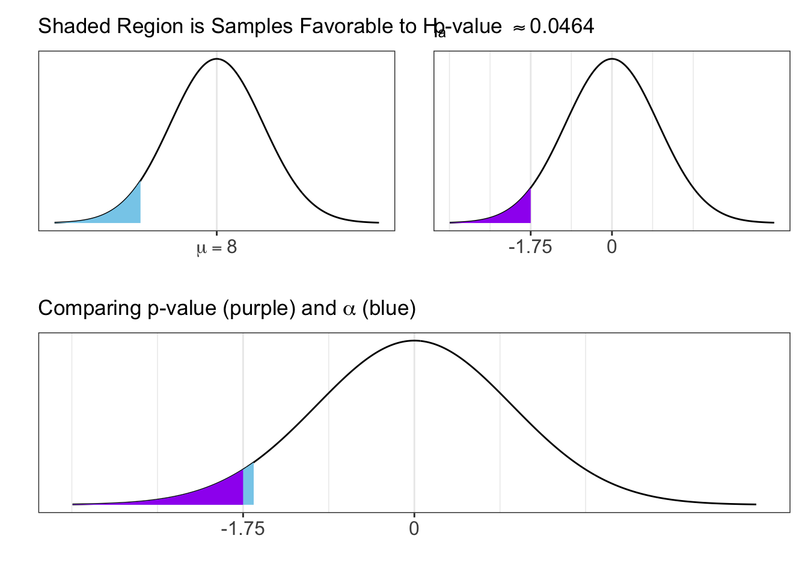
Compare the \(p\)-value to the Level of Significance: The \(p\)-value for our test is around \(0.0464\), which is below our level of significance (\(\alpha\)). This means that, if the null hypothesis were true, there only about a 4.64% probability of observing a sample at least as favorable to the null hypothesis as our sample data. This is unlikely (according to the \(\alpha\) threshold we are using)!
Our \(p\)-value falls below our level of significance. This means that our sample is one of those samples which is favorable for the alternative hypothesis (\(H_a\)). That is, our sample is incompatible with a world in which the null hypothesis is true – we reject the null hypothesis and accept the alternative to it. We do have significant evidence to suggest that New Yorkers sleep, on average, less than 8 hours a night. \(_\blacktriangledown\)
Problem 2 Solved
Problem 2 (Diamond Pricing): Prices of diamonds are determined by what is known as the 4 Cs: cut, clarity, color, and carat weight. The prices of diamonds go up as the carat weight increases, but the increase is not smooth. For example, the difference between the size of a 0.99 carat diamond and a 1 carat diamond is undetectable to the naked human eye, but the price of a 1 carat diamond tends to be much higher than the price of a 0.99 diamond. In this question we use two random samples of diamonds, 0.99 carats and 1 carat, each sample of size 23, and compare the average prices of the diamonds. In order to be able to compare equivalent units, we first divide the price for each diamond by 100 times its weight in carats. That is, for a 0.99 carat diamond, we divide the price by 99. For a 1 carat diamond, we divide the price by 100. The distributions and some sample statistics are shown below.
Conduct a hypothesis test to evaluate if there is a difference between the average standardized prices of 0.99 and 1 carat diamonds. Make sure to state your hypotheses clearly, check relevant conditions, and interpret your results in context of the data.
| 0.99 carats | 1 carat | |
|---|---|---|
| Mean | $44.51 | $56.81 |
| SD | $13.32 | $16.13 |
| n | 23 | 23 |
Solution. The goal of this particular research question is to determine whether there is a difference in average price per point (1/100th of a carat) for 0.99 carat diamonds versus full 1.00 carat diamonds. We’ll conduct a hypothesis test for a difference between two population means here.
Note. Each “participant” in this study is a diamond, and the question being asked about each diamond is “what is the price per point that the diamond sells at?”. The answer to this question will be a dollar value, which we then aggregate/summarize using a mean (average). This is the reason that our hypothesis test involves means.
Knowing that we are conducting a hypothesis test to compare two population means, we are ready to write down our hypotheses for this test. Recall that we are testing for a difference in average per-point prices. The following are our hypotheses for this test:
Hypotheses: The hypotheses for this test are \(\left\{\begin{array}{lr} H_0: & \mu_{0.99} = \mu_{1.00}\\ H_A: & \mu_{0.99} \neq \mu_{1.00}\end{array}\right.\)
Notice that this way of writing our hypotheses hides what our null value is and it also hides how we should compute our point estimate. We can rewrite our hypotheses as follows to show these things more explicitly.
Alternative Phrasing of Hypotheses: \(\left\{\begin{array}{lr} H_0: & \mu_{1.00} - \mu_{0.99} = 0\\ H_A: & \mu_{1.00} - \mu_{0.99} \neq 0\end{array}\right.\)
Note that we’ve just “subtracted \(\mu_{0.99}\) from both sides” in each hypothesis to change our initial hypotheses into these.
About this choice. We could have chosen to subtract \(\mu_{1.00}\) from both sides instead but, intuitively, this would lead to a “negative difference” since we might expect 0.99 carat diamonds to have a lower price per point than full 1.00 carat diamonds. Avoiding negative numbers is sometimes advantageous, but never necessary.
Picture of Alternative Hypothesis: Now that we’ve got our hypotheses written out, lets draw a picture of our alternative hypothesis. As a reminder, what we are really drawing is a representation of the samples which would lead us to prefer the alternative hypothesis (\(H_a\)) as a description of reality over the null hypothesis (\(H_0\)).
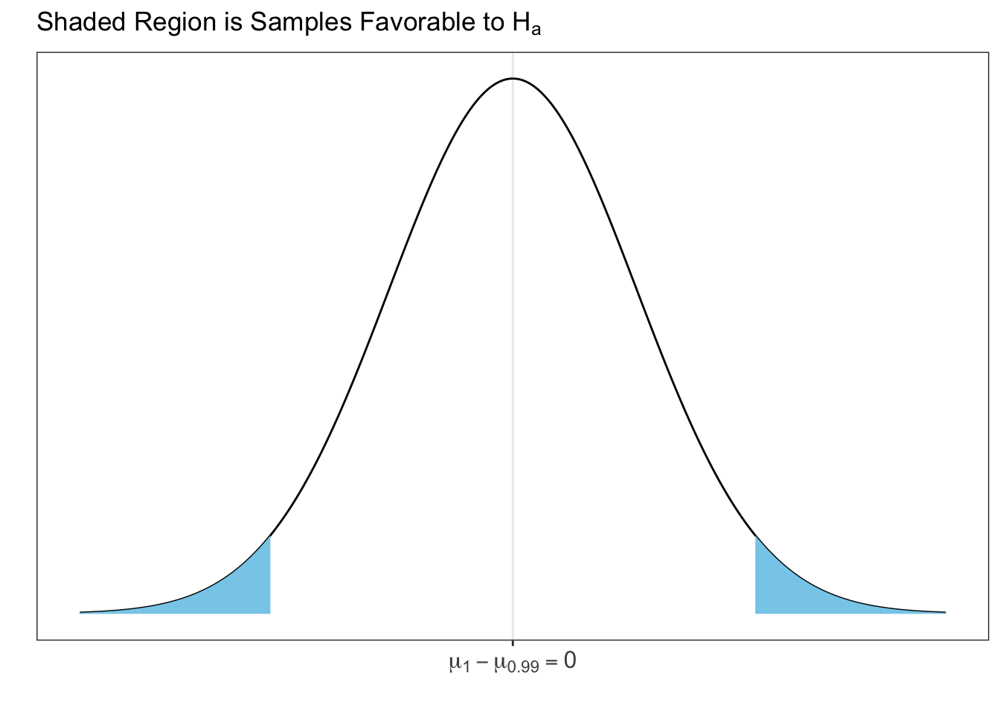
Set \(\alpha\) Level: As a reminder, since no level of significance is explicitly requested in the problem statement, we’ll use \(\alpha = 0.05\). This means that, in the image above, those blue shaded areas represent a total of 5% of observed samples under the null hypothesis. There are 2.5% of samples in each shaded tail – these are the samples which are “unlikely” enough, under the null hypothesis that we would reject that null hypothesis and accept the alternative hypothesis instead.
Compute the Test Statistic: Our job now, is to determine whether our sample is one of those unlikely samples – we’ll do this by identifying a test statistic which represents our sample, and then by computing a corresponding \(p\)-value. As a reminder, our test statistic takes the form: \[\text{test statistic} = \frac{\left(\text{point estimate}\right) - \left(\text{null value}\right)}{\text{standard error}}\]
We can identify our \(\text{null value}\) from the null hypothesis (\(H_0\)).
- In looking at that hypothesis, we see that our null value is \(0\).
We can identify our point estimate by looking at the left-hand side of our null hypothesis and computing the “sample version” of that value.
- We’ll compute \(\bar{x}_{1.00} - \bar{x}_{0.99}\), the difference in sample mean price-per-point values.
- Our point estimate is \(56.81 - 44.51\).
To identify our standard error, we’ll need to walk through the standard error decision tree in order to identify the formula for computing this value.
- Since we are conducting a hypothesis test to compare two means, where the population standard deviation is unknown, and our data are not paired, we land in a box which suggests that \(\displaystyle{S_E = \sqrt{\frac{s_1^2}{n_1} + \frac{s_2^2}{n_2}}}\) and where we have degrees of freedom equal to the minimum between the group sizes minus \(1\).
- Our standard error is then \(\displaystyle{\sqrt{\frac{\left(13.32\right)^2}{23} + \frac{\left(16.13\right)^2}{23}}}\).
- Additionally, the knowledge of degrees of freedom indicates that we can’t use the normal distribution here – instead, we’ll be utilizing a \(t\)-distribution with 22 degrees of freedom.
Let’s compute our test statistic:
point_est <- 56.81 - 44.51
null_val <- 0
sd1 <- 13.32
n1 <- 23
sd2 <- 16.13
n2 <- 23
se <- sqrt((sd1^2)/n1 + (sd2^2)/n2)
test_stat <- (point_est - null_val)/se
test_stat[1] 2.819881Now that we have our test statistic, we are ready to start computing our \(p\)-value. The plot on the left shows our distribution with our test statistic plotted on it. The plot on the right shows the tail area associated with our test statistic.
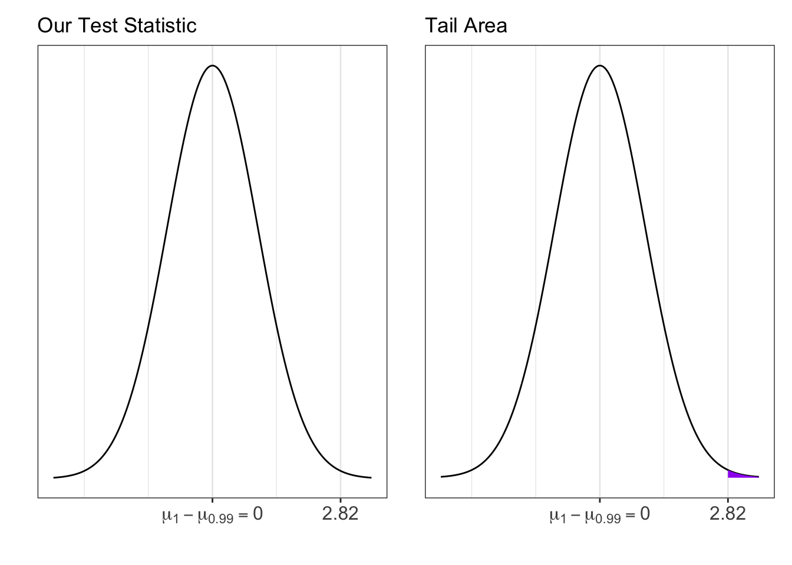
In order to convert that tail area in the right-most image above into a \(p\)-value, we’ll need to double it. We do this because, in our picture of our null hypothesis we have shaded two tail areas there. We’ll compute the \(p\)-value below and then plot the results.
p_val <- 2*(1 - pt(2.82, df = 22))
p_val[1] 0.009971732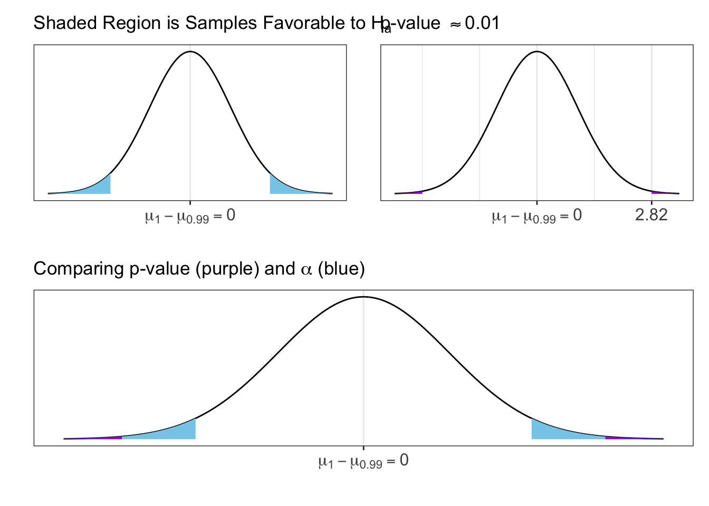
Compare the \(p\)-value to the Level of Significance: The \(p\)-value for our test is around \(0.01\), which is below our level of significance (\(\alpha\)). This means that, if the null hypothesis were true, there only about a 1% probability of observing a sample at least as favorable to the null hypothesis as our sample data. This is very unlikely!
Our \(p\)-value falls below our level of significance. This means that our sample is one of those samples which is favorable for the alternative hypothesis (\(H_a\)). That is, our sample in incompatible with a world in which the null hypothesis is true – we reject the null hypothesis and accept the alternative to it. We do have significant evidence to suggest that the average per-point-price for 0.99 carat diamonds and full 1.00 carat diamonds is different. \(_\blacktriangledown\)
Ramifications of this Problem: This problem utilizes real data. Should you find yourself in a scenario where you are in the market to purchase a diamond, then you should talk to your partner (or other recipient) about the possibility of looking at diamonds just below major thresholds – for example, a 0.24 carat diamond versus a quarter-carat diamond, a 0.49 carat diamond instead of a half-carat diamond, etc. This can save you significant money. For example, in the case of a 0.99 carat diamond versus a full-carat diamond, the average savings is over $1,250. This is a lot of money – especially when the human eye cannot tell the difference between a 0.99 carat and full 1.00 carat diamond. If owning a home is a goal, then that saved money can be put towards your first house!
Problem 3 Unsolved
Problem 3 (Fuel Efficiency of Cars): The table provides summary statistics on highway fuel economy of 52 cars. Use these statistics to calculate a 98% confidence interval for the difference between average highway mileage of manual and automatic cars, and interpret this interval in the context of the data.
| Automatic Highway mpg | Manual Highway mpg | |
|---|---|---|
| Mean | 22.92 | 27.88 |
| SD | 5.29 | 5.01 |
| n | 26 | 26 |
Problem 4 Unsolved
Problem 4 (Forest Management): Forest rangers wanted to better understand the rate of growth for younger trees in the park. They took measurements of a random sample of 50 young trees in 2009 and again measured those same trees in 2019. The data below summarize their measurements, where the heights are in feet:
| 2009 | 2019 | Differences | |
|---|---|---|---|
| \(\bar{x}\) | 12.0 | 24.5 | 12.5 |
| s | 3.5 | 9.5 | 7.2 |
| n | 50 | 50 | 50 |
Construct a 99% confidence interval for the average growth of (what had been) younger trees in the park over 2009-2019.
Sample Size Problems
The following problems ask us to estimate a required sample size. As a reminder, when estimating sample sizes, we need to round up to the next whole number to ensure that the resulting sample size is large enough to achieve our desired level of confidence and our desired margin of error.
Problem 1 Solved
Problem 1 (Legalization of Marijuana): As discussed in Exercise 6.10, the General Social Survey reported a sample where about 61% of US residents thought marijuana should be made legal. If we wanted to limit the margin of error of a 95% confidence interval to 2%, about how many Americans would we need to survey?
Solution. Notice that this problem is asking us to compute a required sample size. In particular, we want to astimate a required sample size for capturing a population proportion. Because of this, we’ll utilize the formula \(\displaystyle{n \geq \left(\frac{z_{\alpha/2}}{\text{Margin of Error}}\right)^2\cdot p\left(1 - p\right)}\). Note that this formula can be found in the top-left of the Standard Error Decision Tree document.
In the formula above, \(z_{\alpha/2}\) is the critical value associated with the level of confidence we desire to have in our confidence interval. We can see that \(z_{\alpha/2} \approx 1.96\) in this scenario since we desire a 95% confidence interval. Next, we can identify that our \(\text{Margin of Error}\) is \(0.02\) since we’d like to estimate the proportion of Americans in favor of legalizing marijuana to within 2%. Finally, we can use \(p = 0.61\) as an estimate for the true population proportion, since the result cited from the General Social Survey suggests that population proportion (Note. If we do not have a prior estimate for the proportion, we should utilize \(p = 0.5\), which is a worst-case scenario, resulting in the largest sample size estimate possible).
Since we have all of the components of the sample size formula, we can now evaluate our sample size.
z = 1.96
p = 0.61
me = 0.02
n <- (z/me)^2*p*(1 - p)
n[1] 2284.792Notice that we get \(n \geq 2284.792\), so we must sample at least 2,285 individuals in order to have the level of confidence and margin of error we desire. (Note. In these sample size problems you can never round down – any rounding must always be upwards in order to maintain your desired confidence level and margin of error.). \(_\blacktriangledown\)
Problem 2 Solved
Problem 2 (Spring Break Spending): A marketing research firm wants to estimate the average amount a student spends during the Spring break. They want to determine it to within $120 with 90% confidence. The first does some research which allows it to roughly say that Spring Break expenditure ranges from $100 to $1700 per student. They use the approximation \(\displaystyle{\frac{\text{range}}{4}}\) for \(\sigma\). How many students should they sample?
Solution. This problem is also asking us to compute a required sample size. In this case, however, we want to astimate a required sample size for capturing a population mean. Because of this, we’ll utilize our other sample size formula, \(\displaystyle{n \geq \left(\frac{z_{\alpha/2}\cdot \sigma}{\text{Margin of Error}}\right)^2}\). Note that this formula can be found in the top-right of the Standard Error Decision Tree document.
Again, \(z_{\alpha/2}\) is the critical value associated with the level of confidence we desire to have in our confidence interval. We can see that \(z_{\alpha/2} \approx 1.65\) in this scenario since we desire a 90% confidence interval (Note. This formula results in a crude approximation of the required sample size, since we are utilizing the normal distribution to obtain \(z_{\alpha/2}\), which may not be warranted – there are software packages that can help us obtain more justifiable estimates). Next, we can identify that our \(\text{Margin of Error}\) is $120 since we’d like to estimate the population mean (average) per-student expenditure on Spring Break to within this amount. Finally, we are given some direction on how to estimate the population standard deviation. We can use \(\displaystyle{\sigma \approx \frac{\text{range}}{4}}\) (which is a relatively common approximation), so that \(\displaystyle{\sigma \approx \frac{1700 - 100}{4} = 400}\).
Since we have all of the components of the sample size formula, we can now evaluate our sample size.
z = 1.65
sigma = 400
me = 120
n <- (z*sigma/me)^2
n[1] 30.25Notice that we get \(n \geq 30.25\), so we must sample at least 31 individuals in order to have the level of confidence and margin of error we desire. As noted in the solution to the previous problem, we must round up in order to maintain our level of confidence and desired margin of error. \(_\blacktriangledown\)
Comparing Many Means with Analysis of Variance (ANOVA)
In this section, we explore the use of Analysis of Variance to compare multiple (more than two) group means.
Problem 1 Solved
Problem 1 (Taylor Swift Songs): Take a look at the Taylor Albums data frame from the {taylor} R package. Compare one of the song metrics (duration, danceability, speechiness, loudness, etc.) across Taylor’s released albums.
library(taylor)
taylors_version <- taylor_album_songs %>%
filter(str_detect(album_name, "Taylor's Version"))
taylors_version %>%
select(-lyrics) %>%
head() %>%
kable() %>%
kable_styling(bootstrap_options = c("hover", "striped"))| album_name | ep | album_release | track_number | track_name | artist | featuring | bonus_track | promotional_release | single_release | track_release | danceability | energy | key | loudness | mode | speechiness | acousticness | instrumentalness | liveness | valence | tempo | time_signature | duration_ms | explicit | key_name | mode_name | key_mode |
|---|---|---|---|---|---|---|---|---|---|---|---|---|---|---|---|---|---|---|---|---|---|---|---|---|---|---|---|
| Fearless (Taylor's Version) | FALSE | 2021-04-09 | 1 | Fearless (Taylor's Version) | Taylor Swift | NA | FALSE | NA | NA | 2021-04-09 | 0.569 | 0.741 | 5 | -4.963 | 1 | 0.0282 | 0.0122 | 0e+00 | 0.3330 | 0.430 | 100.118 | 4 | 241592 | FALSE | F | major | F major |
| Fearless (Taylor's Version) | FALSE | 2021-04-09 | 2 | Fifteen (Taylor's Version) | Taylor Swift | NA | FALSE | NA | NA | 2021-04-09 | 0.559 | 0.646 | 7 | -4.610 | 1 | 0.0272 | 0.1160 | 0e+00 | 0.3200 | 0.289 | 95.466 | 4 | 294419 | FALSE | G | major | G major |
| Fearless (Taylor's Version) | FALSE | 2021-04-09 | 3 | Love Story (Taylor's Version) | Taylor Swift | NA | FALSE | NA | 2021-02-12 | 2021-02-12 | 0.627 | 0.792 | 2 | -4.311 | 1 | 0.0310 | 0.1300 | 4e-06 | 0.0845 | 0.415 | 119.054 | 4 | 235767 | FALSE | D | major | D major |
| Fearless (Taylor's Version) | FALSE | 2021-04-09 | 4 | Hey Stephen (Taylor's Version) | Taylor Swift | NA | FALSE | NA | NA | 2021-04-09 | 0.788 | 0.571 | 6 | -6.135 | 1 | 0.0296 | 0.1060 | 0e+00 | 0.0934 | 0.797 | 115.990 | 4 | 254255 | FALSE | F# | major | F# major |
| Fearless (Taylor's Version) | FALSE | 2021-04-09 | 5 | White Horse (Taylor's Version) | Taylor Swift | NA | FALSE | NA | NA | 2021-04-09 | 0.423 | 0.517 | 0 | -7.377 | 1 | 0.0486 | 0.3690 | 0e+00 | 0.1770 | 0.366 | 185.262 | 4 | 234516 | FALSE | C | major | C major |
| Fearless (Taylor's Version) | FALSE | 2021-04-09 | 6 | You Belong With Me (Taylor's Version) | Taylor Swift | NA | FALSE | NA | NA | 2021-04-09 | 0.632 | 0.773 | 6 | -4.856 | 1 | 0.0346 | 0.0623 | 0e+00 | 0.0885 | 0.474 | 130.033 | 4 | 231124 | FALSE | F# | major | F# major |
taylors_version %>%
count(album_name)# A tibble: 4 × 2
album_name n
<chr> <int>
1 1989 (Taylor's Version) 23
2 Fearless (Taylor's Version) 26
3 Red (Taylor's Version) 30
4 Speak Now (Taylor's Version) 22taylor_anova <- aov(danceability ~ album_name, data = taylors_version)
summary(taylor_anova) Df Sum Sq Mean Sq F value Pr(>F)
album_name 3 0.0814 0.027146 3.2 0.0268 *
Residuals 96 0.8143 0.008482
---
Signif. codes: 0 '***' 0.001 '**' 0.01 '*' 0.05 '.' 0.1 ' ' 1
1 observation deleted due to missingnesstaylors_version %>%
ggplot() +
geom_boxplot(aes(x = danceability, fill = album_name, y = album_name)) Warning: Removed 1 row containing non-finite outside the scale range
(`stat_boxplot()`).
plot(TukeyHSD(taylor_anova))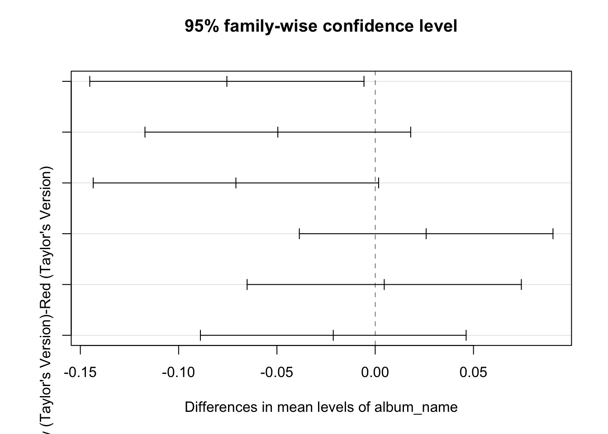
TukeyHSD(taylor_anova) Tukey multiple comparisons of means
95% family-wise confidence level
Fit: aov(formula = danceability ~ album_name, data = taylors_version)
$album_name
diff
Fearless (Taylor's Version)-1989 (Taylor's Version) -0.075461538
Red (Taylor's Version)-1989 (Taylor's Version) -0.049533333
Speak Now (Taylor's Version)-1989 (Taylor's Version) -0.070863636
Red (Taylor's Version)-Fearless (Taylor's Version) 0.025928205
Speak Now (Taylor's Version)-Fearless (Taylor's Version) 0.004597902
Speak Now (Taylor's Version)-Red (Taylor's Version) -0.021330303
lwr
Fearless (Taylor's Version)-1989 (Taylor's Version) -0.14521683
Red (Taylor's Version)-1989 (Taylor's Version) -0.11712362
Speak Now (Taylor's Version)-1989 (Taylor's Version) -0.14346725
Red (Taylor's Version)-Fearless (Taylor's Version) -0.03859283
Speak Now (Taylor's Version)-Fearless (Taylor's Version) -0.06515739
Speak Now (Taylor's Version)-Red (Taylor's Version) -0.08892059
upr p adj
Fearless (Taylor's Version)-1989 (Taylor's Version) -0.005706242 0.0286276
Red (Taylor's Version)-1989 (Taylor's Version) 0.018056953 0.2281796
Speak Now (Taylor's Version)-1989 (Taylor's Version) 0.001739978 0.0584160
Red (Taylor's Version)-Fearless (Taylor's Version) 0.090449236 0.7200913
Speak Now (Taylor's Version)-Fearless (Taylor's Version) 0.074353198 0.9981683
Speak Now (Taylor's Version)-Red (Taylor's Version) 0.046259984 0.8424368taylor_mod <- lm(duration_ms ~ danceability + energy + loudness + mode + speechiness + liveness + valence + tempo, data = taylors_version)
summary(taylor_mod)
Call:
lm(formula = duration_ms ~ danceability + energy + loudness +
mode + speechiness + liveness + valence + tempo, data = taylors_version)
Residuals:
Min 1Q Median 3Q Max
-103357 -23013 -2686 17721 349021
Coefficients:
Estimate Std. Error t value Pr(>|t|)
(Intercept) 526048.66 73709.38 7.137 2.25e-10 ***
danceability -84552.70 68043.12 -1.243 0.21720
energy -167360.13 54894.75 -3.049 0.00301 **
loudness 8954.95 3693.76 2.424 0.01731 *
mode -14739.16 26034.18 -0.566 0.57269
speechiness -217096.86 261117.68 -0.831 0.40792
liveness -47577.30 69585.17 -0.684 0.49588
valence -47931.39 34175.11 -1.403 0.16416
tempo -87.33 191.97 -0.455 0.65027
---
Signif. codes: 0 '***' 0.001 '**' 0.01 '*' 0.05 '.' 0.1 ' ' 1
Residual standard error: 49650 on 91 degrees of freedom
(1 observation deleted due to missingness)
Multiple R-squared: 0.2612, Adjusted R-squared: 0.1962
F-statistic: 4.021 on 8 and 91 DF, p-value: 0.0004006Problem 2 Solved
Problem 2 (Penguin Physiology): Take a look at the penguins data frame from the {palmerpenguins} R package. Compare one of the body measurements (body_mass_g, flipper_length_mm, bill_depth_mm, etc.) across the different penguin species, islands, or observation years.
library(palmerpenguins)
Attaching package: 'palmerpenguins'The following objects are masked from 'package:datasets':
penguins, penguins_rawpenguins %>%
head() %>%
kable() %>%
kable_styling(bootstrap_options = c("hover", "striped"))| species | island | bill_length_mm | bill_depth_mm | flipper_length_mm | body_mass_g | sex | year |
|---|---|---|---|---|---|---|---|
| Adelie | Torgersen | 39.1 | 18.7 | 181 | 3750 | male | 2007 |
| Adelie | Torgersen | 39.5 | 17.4 | 186 | 3800 | female | 2007 |
| Adelie | Torgersen | 40.3 | 18.0 | 195 | 3250 | female | 2007 |
| Adelie | Torgersen | NA | NA | NA | NA | NA | 2007 |
| Adelie | Torgersen | 36.7 | 19.3 | 193 | 3450 | female | 2007 |
| Adelie | Torgersen | 39.3 | 20.6 | 190 | 3650 | male | 2007 |
penguins %>%
count(species)# A tibble: 3 × 2
species n
<fct> <int>
1 Adelie 152
2 Chinstrap 68
3 Gentoo 124Question: Does average flipper length vary across the three species of penguin? Use \(\alpha = 0.10\).
flipper_lengths <- penguins$flipper_length_mm
species <- penguins$species
penguin_anova_results <- aov(flipper_lengths ~ species)
summary(penguin_anova_results) Df Sum Sq Mean Sq F value Pr(>F)
species 2 52473 26237 594.8 <2e-16 ***
Residuals 339 14953 44
---
Signif. codes: 0 '***' 0.001 '**' 0.01 '*' 0.05 '.' 0.1 ' ' 1
2 observations deleted due to missingnessTukeyHSD(penguin_anova_results) Tukey multiple comparisons of means
95% family-wise confidence level
Fit: aov(formula = flipper_lengths ~ species)
$species
diff lwr upr p adj
Chinstrap-Adelie 5.869887 3.586583 8.153191 0
Gentoo-Adelie 27.233349 25.334376 29.132323 0
Gentoo-Chinstrap 21.363462 19.000841 23.726084 0Question: Does average bill depth vary across the three species of penguin? Use \(\alpha = 0.10\).
penguin_anova_results <- aov(bill_depth_mm ~ species, data = penguins)
summary(penguin_anova_results) Df Sum Sq Mean Sq F value Pr(>F)
species 2 904.0 452.0 359.8 <2e-16 ***
Residuals 339 425.9 1.3
---
Signif. codes: 0 '***' 0.001 '**' 0.01 '*' 0.05 '.' 0.1 ' ' 1
2 observations deleted due to missingnessTukeyHSD(penguin_anova_results) Tukey multiple comparisons of means
95% family-wise confidence level
Fit: aov(formula = bill_depth_mm ~ species, data = penguins)
$species
diff lwr upr p adj
Chinstrap-Adelie 0.07423062 -0.3110995 0.4595607 0.8928875
Gentoo-Adelie -3.36424379 -3.6847143 -3.0437733 0.0000000
Gentoo-Chinstrap -3.43847441 -3.8371903 -3.0397586 0.0000000plot(TukeyHSD(penguin_anova_results))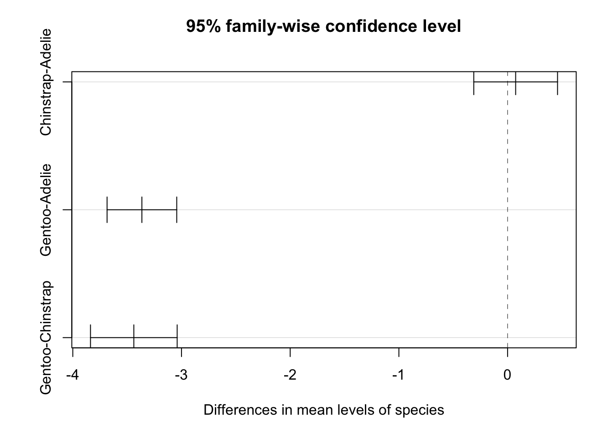
penguins %>%
ggplot() +
geom_density(aes(x = bill_depth_mm, fill = species)) +
facet_wrap(~species, ncol = 1)Warning: Removed 2 rows containing non-finite outside the scale range
(`stat_density()`).
Question: Does average bill length vary across the three species of penguin? Use \(\alpha = 0.10\).
penguin_anova_results <- aov(bill_length_mm ~ species, data = penguins)
summary(penguin_anova_results) Df Sum Sq Mean Sq F value Pr(>F)
species 2 7194 3597 410.6 <2e-16 ***
Residuals 339 2970 9
---
Signif. codes: 0 '***' 0.001 '**' 0.01 '*' 0.05 '.' 0.1 ' ' 1
2 observations deleted due to missingnessTukeyHSD(penguin_anova_results) Tukey multiple comparisons of means
95% family-wise confidence level
Fit: aov(formula = bill_length_mm ~ species, data = penguins)
$species
diff lwr upr p adj
Chinstrap-Adelie 10.042433 9.024859 11.0600064 0.0000000
Gentoo-Adelie 8.713487 7.867194 9.5597807 0.0000000
Gentoo-Chinstrap -1.328945 -2.381868 -0.2760231 0.0088993plot(TukeyHSD(penguin_anova_results))
penguins %>%
ggplot() +
geom_density(aes(x = bill_length_mm, fill = species)) +
facet_wrap(~species, ncol = 1)Warning: Removed 2 rows containing non-finite outside the scale range
(`stat_density()`).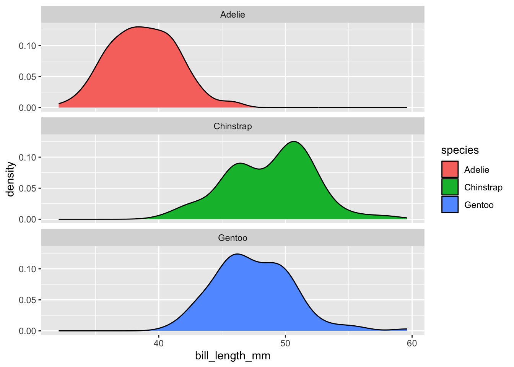
Question: Are species and island independent? Use \(\alpha = 0.05\).
chi_sq_results <- chisq.test(penguins$species, penguins$island, correct = FALSE)
chi_sq_results
Pearson's Chi-squared test
data: penguins$species and penguins$island
X-squared = 299.55, df = 4, p-value < 2.2e-16Penguins Regression:
mass_mod <- lm(body_mass_g ~ flipper_length_mm + year, data = penguins)
summary(mass_mod)
Call:
lm(formula = body_mass_g ~ flipper_length_mm + year, data = penguins)
Residuals:
Min 1Q Median 3Q Max
-1052.54 -265.45 -23.57 243.70 1196.65
Coefficients:
Estimate Std. Error t value Pr(>|t|)
(Intercept) 208300.559 51980.840 4.007 7.56e-05 ***
flipper_length_mm 50.738 1.506 33.695 < 2e-16 ***
year -106.718 25.912 -4.119 4.80e-05 ***
---
Signif. codes: 0 '***' 0.001 '**' 0.01 '*' 0.05 '.' 0.1 ' ' 1
Residual standard error: 385.3 on 339 degrees of freedom
(2 observations deleted due to missingness)
Multiple R-squared: 0.7705, Adjusted R-squared: 0.7691
F-statistic: 569 on 2 and 339 DF, p-value: < 2.2e-16Problem 3 Unsolved
Problem 3 (NFL Rush Yards by Direction): Explore the rush_21 data frame, containing data on running plays from the 2021 NFL season. Conduct a test to determine whether the average yards gained on a rushing play is associated with the direction (left, middle, right) of the running play.
library(nflfastR)
pbp_21 <- load_pbp(2021)
rush_21 <- pbp_21 %>%
filter(play_type == "run")
rush_21 %>%
select(rusher, down, qtr, rushing_yards, run_location) %>%
head() %>%
kable() %>%
kable_styling(bootstrap_options = c("hover", "striped"))| rusher | down | qtr | rushing_yards | run_location |
|---|---|---|---|---|
| D.Henry | 1 | 1 | -3 | left |
| K.Murray | 1 | 1 | 2 | right |
| C.Edmonds | 1 | 1 | 0 | middle |
| D.Henry | 1 | 1 | -1 | middle |
| D.Henry | 1 | 1 | 2 | left |
| D.Henry | 2 | 1 | 7 | left |